Tech Stack
Languages
Python
SQL
Libraries & Frameworks

Pandas
NumPy
Seaborn
Matplotlib
Hugging Face
Databases
MySQL
PostgreSQL
Data Visualization

Tableau
Power BI
Google Sheets
Google Looker Studio
Tools
VS Code
GitHub
MS Excel
Google Colab
Jupyter Notebook
Services
SQL Analysis
Data extraction, cleaning, and business analysis.
Power BI Dashboards
Interactive dashboards and KPI reporting.
Excel Analytics
Pivot tables, reporting, and automation.
Business Intelligence
Insights and data-driven recommendations.
My Projects
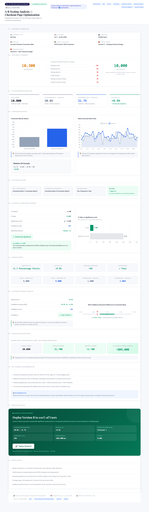
A/B Testing Analysis for Checkout Optimization
An A/B Testing analysis to evaluate checkout page optimization using SQL, Python, and inferential statistics to measure conversion rate improvements and potential business impact.
View on GitHub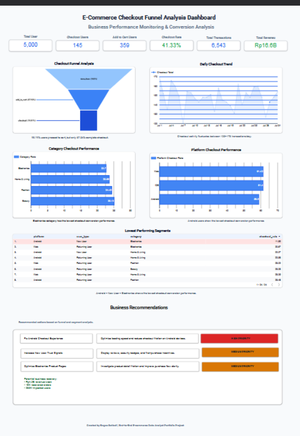
E-Commerce Funnel & Conversion Analysis
E-commerce checkout funnel analysis using SQL in BigQuery to identify low-converting user segments and provide data-driven business recommendations.
View on GitHub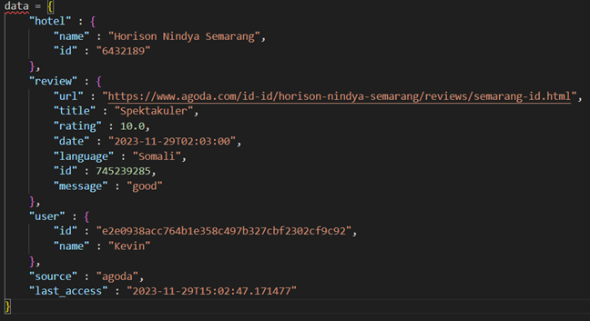
Hotel Review Data Scraping – Robota
A web scraping & ETL project for hotel reviews from various OTAs such as Agoda, Booking, Traveloka, etc.
View on Google Drive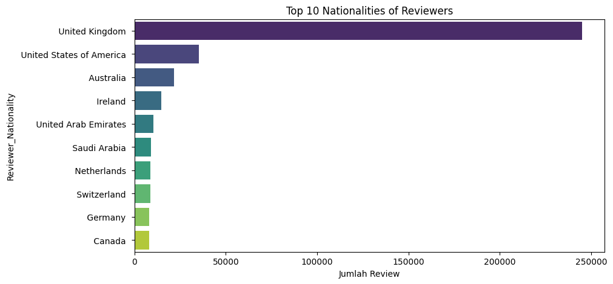
Exploratory Data Analysis of Hotel Reviews in Europe
This project performs EDA on a European hotel reviews dataset containing 500K+ review records.
View on Google Drive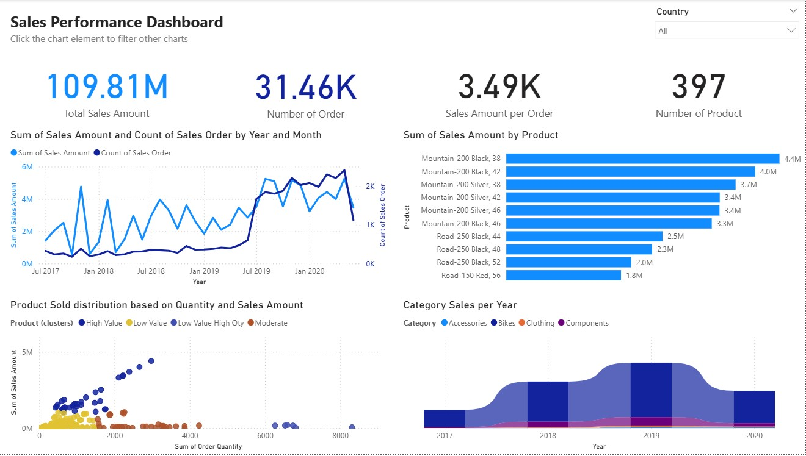
Sales Performance Analysis Using Interactive Power BI Dashboard
The objective of this project was sales data from 2017 to 2020
View on Google Drive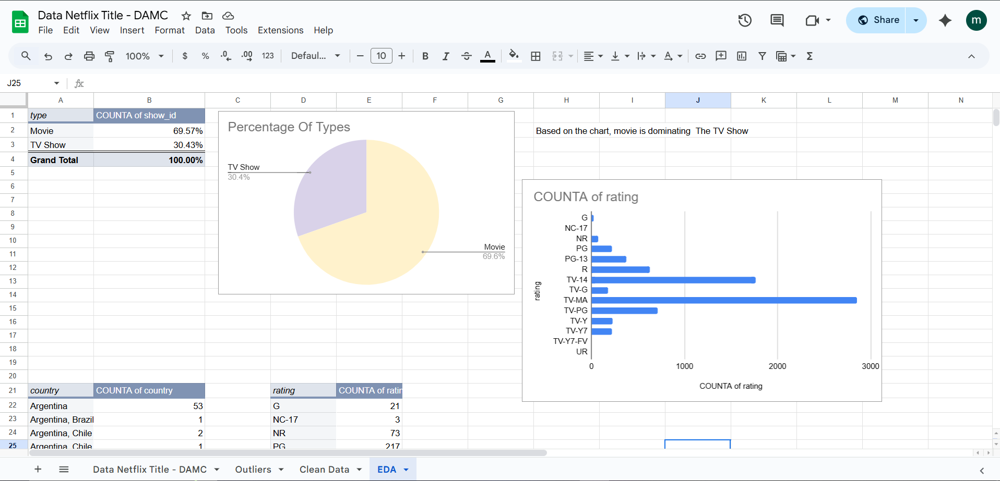
Netflix Content Analysis Discovery & Insights
Netflix and other streaming platforms need deep understanding of their content—most popular genres, country of origin, rating trends, and more.
View on Google Drive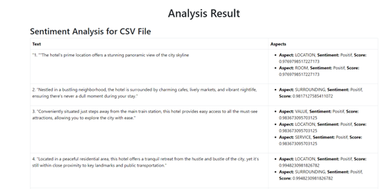
English Hotel Sentiment Analysis
This project aims to analyze sentiment from English-language hotel customer reviews.
View on GitHub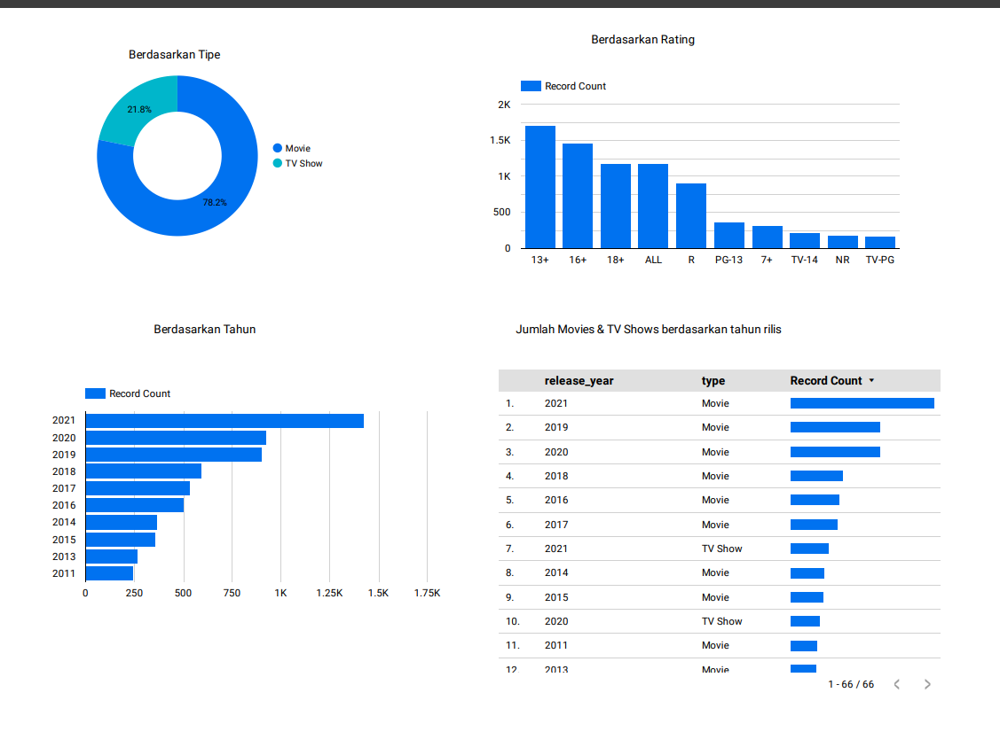
Netflix TV Shows & Movies Analysis with Looker Studio
This project aims to analyze Netflix release data based on content type (Movies and TV Shows).
View on Looker Studio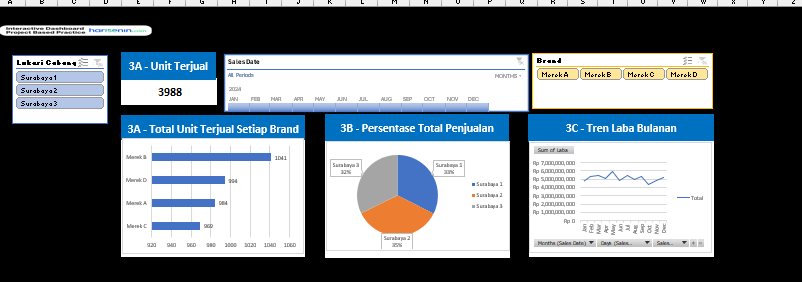
Interactive Dashboard & 6-Month Forecast PT Motor Sejati Berkah
PT Motor Sejati Berkah wants to improve visibility into daily sales, brand performance, branch contributions, and profit projections going forward.
View on Google Drive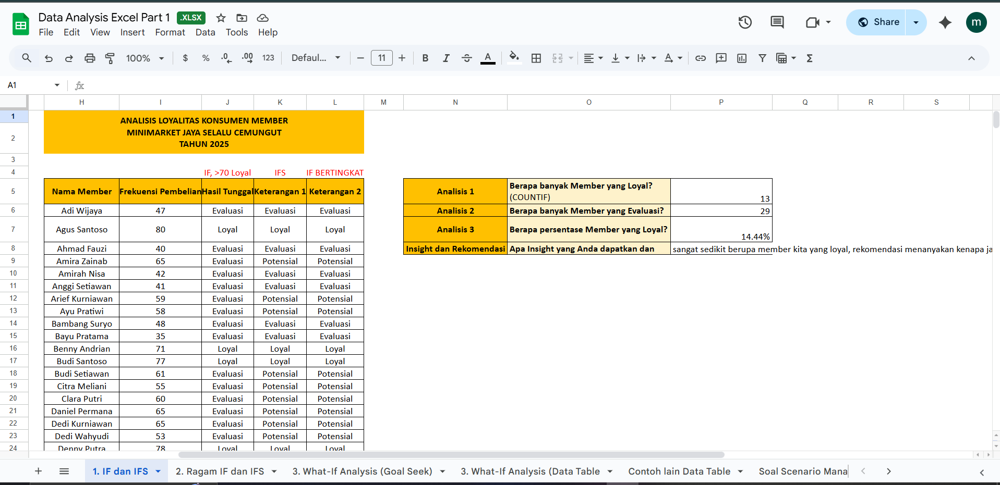
Customer Loyalty Analysis Minimarket Jaya Selalu Cemungut (2025)
Minimarket Jaya Selalu Cemungut wants to understand its customer loyalty patterns in 2025 with the goal of developing retention strategies through a segmented CRM approach.
View on Looker Studio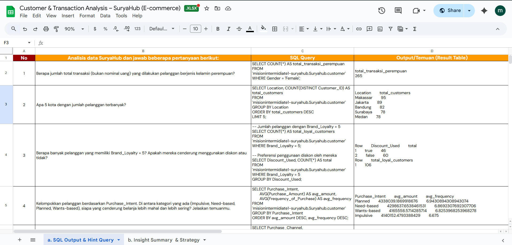
Customer & Transaction Analysis – SuryaHub (E-commerce)
SuryaHub is a multi-category e-commerce company selling food products, household supplies, electronics,
View on Google Drive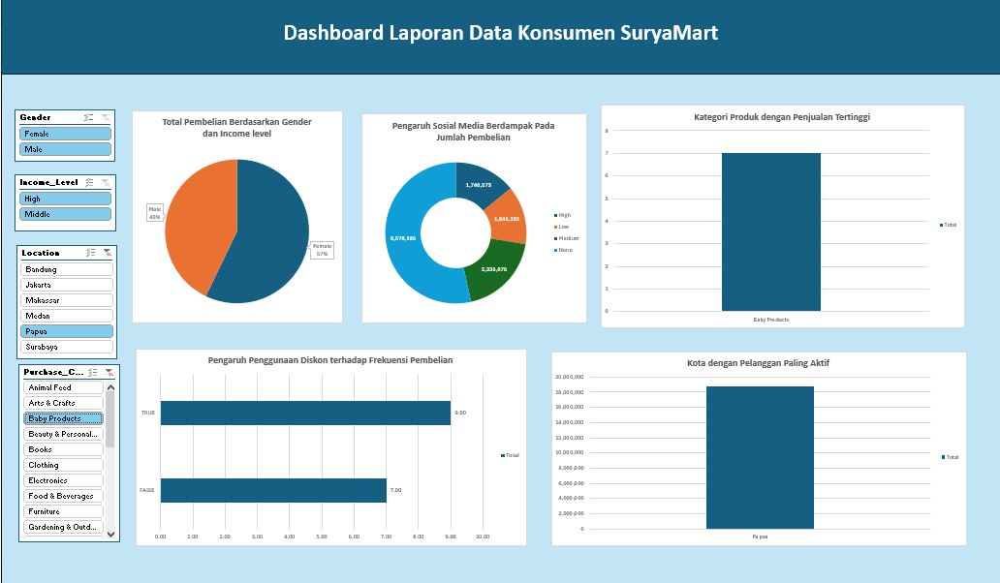
Customer Behavior Analysis – SuryaMart (E-commerce Multikategori)
SuryaMart is a multi-category e-commerce company selling electronics, clothing, groceries, books, and health supplements.
View on Google Drive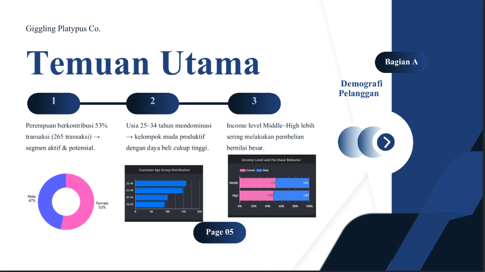
Customer Insights & Strategy Optimization – SuryaHub (June 2025)
Analysis of SuryaHub's e-commerce performance during June 2025, noting an increase in transaction volume but stagnation in revenue per customer.
View Full Report